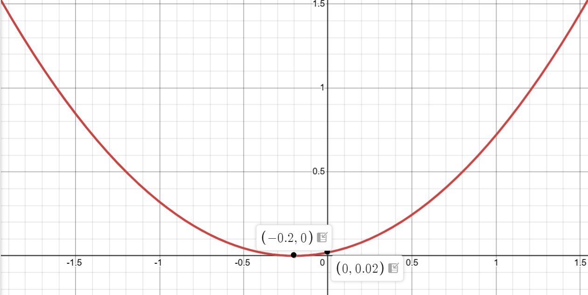
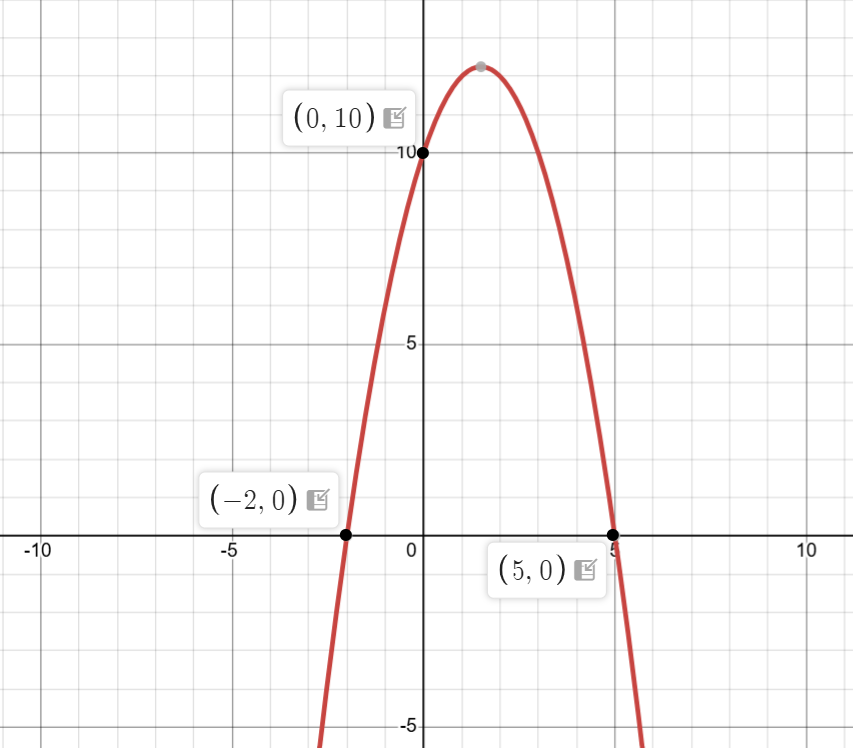
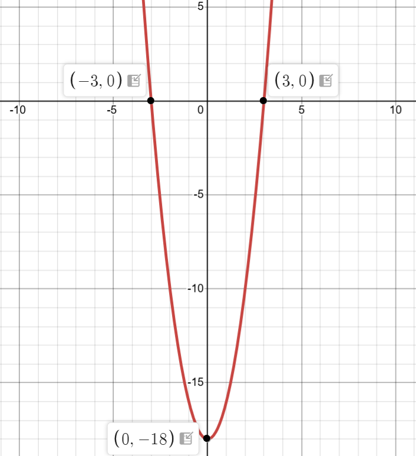

Set y = 0:
0.5x² + 0.2x + 0.02 = 0
Multiply by 100: 50x² + 20x + 2 = 0
Using the quadratic formula:
x = (-20 ± √(400 - 400))/(100)
x = (-20 ± 0)/100
Discriminant = 0, so there is no real x-intercept (touches x-axis at turning point)
Since discriminant = 0, the graph touches but doesn't cross the x-axis
Step 3: Find the x-coordinate of the turning point
Using x = -b/(2a) where a = 0.5, b = 0.2:
x = -0.2/(2 × 0.5)
x = -0.2/1 = -0.2
The turning point occurs at x = -0.2
Step 4: Find the y-coordinate of the turning point
Substitute x = -0.2:
y = 0.5(-0.2)² + 0.2(-0.2) + 0.02
y = 0.5(0.04) - 0.04 + 0.02
y = 0.02 - 0.04 + 0.02
y = 0
The turning point is at (-0.2, 0). This is where the parabola touches the x-axis
Step 5: Determine the shape
Since a = 0.5 > 0, the parabola opens upward (U-shaped)
Positive coefficient of x² means minimum turning point
Step 6: Sketch the graph

Key features:
• Y-intercept: (0, 0.02)
• X-intercept (touching point): (-0.2, 0)
• Minimum turning point: (-0.2, 0)
• Opens upward
• Graph just touches the x-axis at the turning point
✨ Graph sketched with all key points labeled ✨
Question 4:
The diagram shows the graph of y = ax² + bx + c where a, b and c are integers.
Find the values of a, b and c.

Solution:
Step 1: Identify key features from the graph
From the graph:
• Y-intercept: (0, 10)
• X-intercepts: (-2, 0) and (5, 0)
• Parabola opens downward (a < 0)
Read the coordinates of the intercepts from the graph
📐 Intercept Form of a Quadratic Equation
y = a(x - p)(x - q)
Where:
• p and q are the x-intercepts (roots) of the parabola
• a is a constant that determines the width and direction of the parabola
• If a > 0, the parabola opens upward
• If a < 0, the parabola opens downward
Step 2: Use the factored form with x-intercepts
Since x-intercepts are -2 and 5:
y = a(x + 2)(x - 5)
The factored form uses the roots of the equation
Step 3: Use the y-intercept to find a
When x = 0, y = 10:
10 = a(0 + 2)(0 - 5)
10 = a(2)(-5)
10 = -10a
a = -1
Substitute the y-intercept coordinates to find the value of a
Step 4: Expand to find b and c
y = -1(x + 2)(x - 5)
y = -(x² - 5x + 2x - 10)
y = -(x² - 3x - 10)
y = -x² + 3x + 10
Expand the brackets and simplify
Step 5: Identify a, b, and c
Comparing y = -x² + 3x + 10 with y = ax² + bx + c:
a = -1
b = 3
c = 10
Match coefficients with the standard form
✨ Final Answer: a = -1, b = 3, c = 10 ✨
Question 5:
The diagram shows the graph of y = ax² + bx + c where a, b and c are integers.
Find the values of a, b and c.

Solution:
Step 1: Identify key features from the graph
From the graph:
• Y-intercept: (0, -18)
• X-intercepts: (-3, 0) and (3, 0)
• Parabola opens upward (a > 0)
Read the coordinates of the intercepts from the graph
📐 Intercept Form of a Quadratic Equation
y = a(x - p)(x - q)
Where:
• p and q are the x-intercepts (roots) of the parabola
• a is a constant that determines the width and direction of the parabola
• If a > 0, the parabola opens upward
• If a < 0, the parabola opens downward
Step 2: Use the factored form with x-intercepts
Since x-intercepts are -3 and 3:
y = a(x + 3)(x - 3)
The factored form uses the roots of the equation
Step 3: Use the y-intercept to find a
When x = 0, y = -18:
-18 = a(0 + 3)(0 - 3)
-18 = a(3)(-3)
-18 = -9a
a = 2
Substitute the y-intercept coordinates to find the value of a
Step 4: Expand to find b and c
y = 2(x + 3)(x - 3)
y = 2(x² - 9)
y = 2x² - 18
Expand using difference of two squares: (x + 3)(x - 3) = x² - 9
Step 5: Identify a, b, and c
Comparing y = 2x² - 18 with y = ax² + bx + c:
a = 2
b = 0
c = -18
Match coefficients with the standard form (note: no x term means b = 0)
✨ Final Answer: a = 2, b = 0, c = -18 ✨
Question 6:
The graph of y = ax² + bx + c has a minimum at (5, -3) and passes through (4, 0).
Find the values of a, b and c.
Solution:
Step 1: Identify the given information
• Minimum (vertex) at (5, -3)
• Passes through the point (4, 0)
The vertex is the turning point of the parabola
📐 Vertex Form of a Quadratic Equation
y = a(x - h)² + k
Where:
• (h, k) is the vertex (turning point) of the parabola
• a is a constant that determines the width and direction of the parabola
• If a > 0, the parabola opens upward (minimum)
• If a < 0, the parabola opens downward (maximum)
Step 2: Write the equation in vertex form
Vertex is (5, -3), so h = 5 and k = -3:
y = a(x - 5)² - 3
Substitute the vertex coordinates into the vertex form
Step 3: Use the point (4, 0) to find a
Substitute x = 4 and y = 0:
0 = a(4 - 5)² - 3
0 = a(-1)² - 3
0 = a - 3
a = 3
The parabola passes through (4, 0), so these values satisfy the equation
Step 4: Write the complete equation in vertex form
y = 3(x - 5)² - 3
Now we have the full vertex form with a = 3
Step 5: Expand to standard form
y = 3(x - 5)² - 3
y = 3(x² - 10x + 25) - 3
y = 3x² - 30x + 75 - 3
y = 3x² - 30x + 72
Expand the bracket and simplify to get standard form
Step 6: Identify a, b, and c
Comparing y = 3x² - 30x + 72 with y = ax² + bx + c:
a = 3
b = -30
c = 72